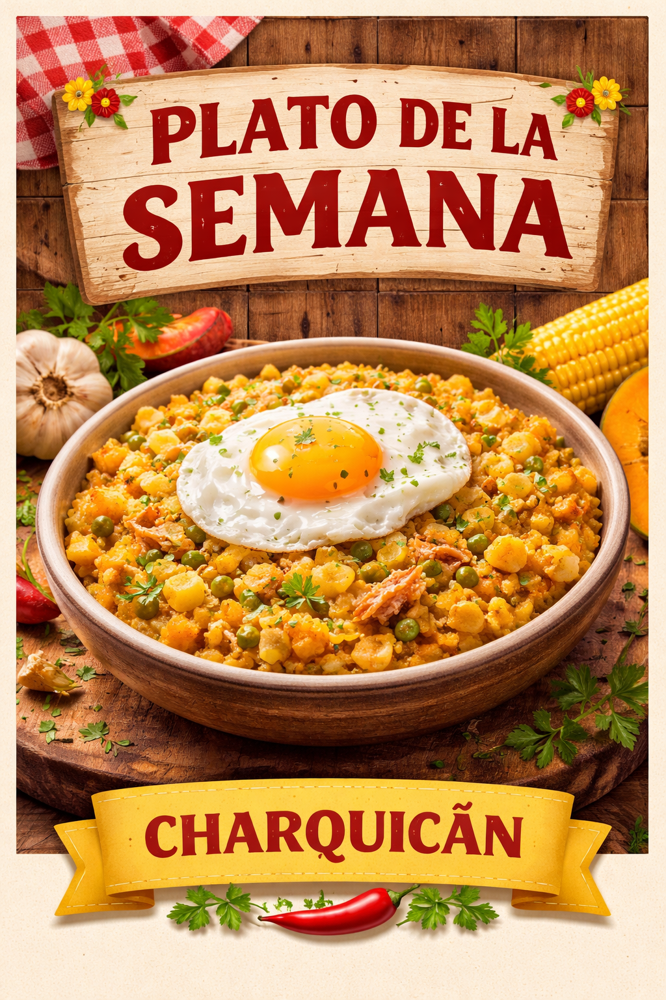
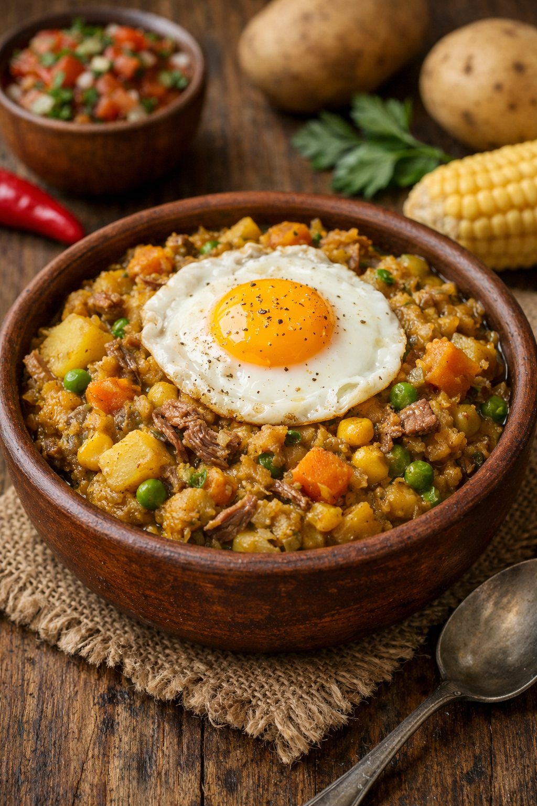
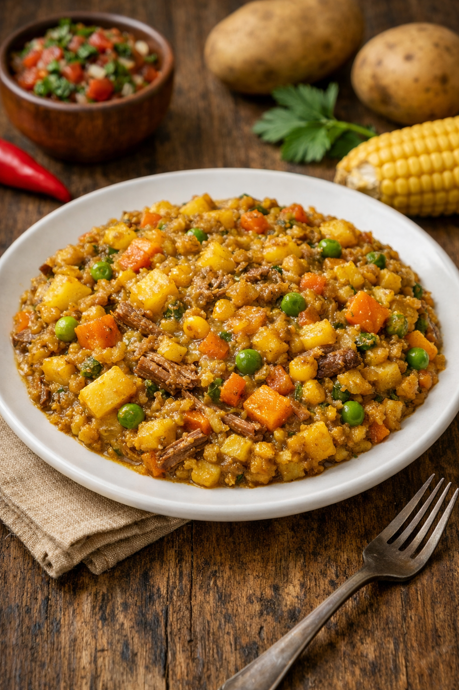

Bebidas
| Producto | Descripción | Precio |
|---|---|---|
| Cerveza artesanal | Variedades elaboradas en la zona | $3.500 |
| Gaseosa | Coca-Cola, Fanta o Sprite | $1.800 |
| Jugo natural | Frutas frescas de temporada | $2.500 |
Postres
| Producto | Descripción | Precio |
|---|---|---|
| Leche asada | Postre tradicional a base de leche, huevo y caramelo | $2.500 |
| Kuchen de manzana | Masa suave con relleno de manzana y un toque de canela | $3.000 |
| Mote con huesillo | Duraznos deshidratados en almíbar con mote, refrescante y dulce | $2.200 |
Especialidades
- Lomo a lo pobre
- Descripción: Jugoso lomo de vacuno acompañado de papas fritas, huevo frito y cebolla caramelizada.
Precio: $7.500 - Costillar de cerdo al horno
- Descripción: Costillar cocinado lentamente al horno, marinado con especias, servido con papas doradas.
Precio: $8.500
Promociones
- Promo familiar. Descripción: 4 platos principales + 4 bebidas a elección. Precio: $19.900
- Menú ejecutivo. Descripción: Plato principal + bebida + postre. Precio: $6.500
- Combo especialidad. Descripción: Especialidad de la casa + bebida + postre. Precio: $9.900
Plato de la semana
Charquicán



Preparación típica chilena elaborada con papas, zapallo, choclo y carne desmenuzada. Puede servirse acompañado de huevo frito.
Precio: $4.200